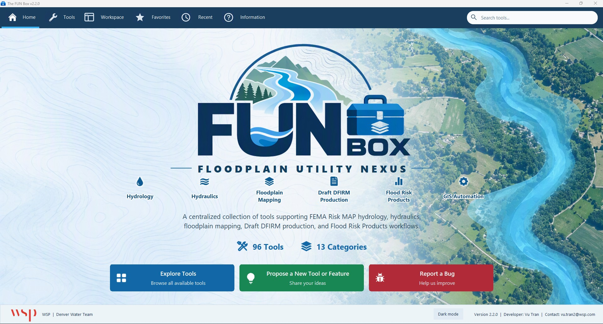
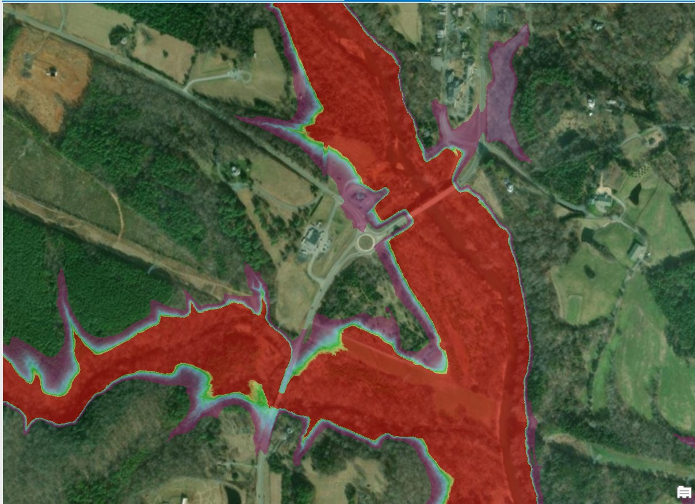
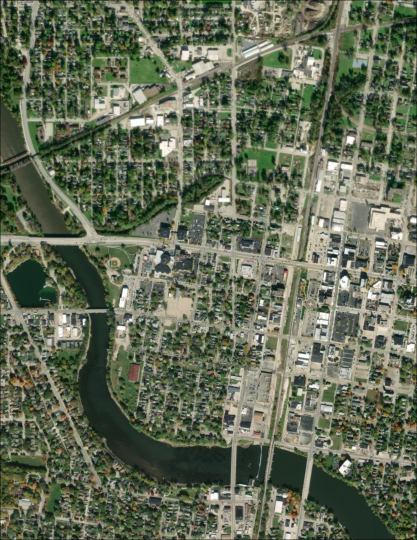
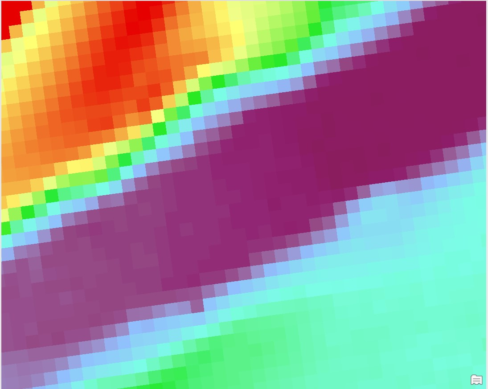

Workflow automation
Python tools for repeatable processing, floodplain cleanup, and GIS quality checks.
Python / ArcPy / QA & QC
I’m a GIS professional in Colorado, building Python tools, spatial workflows, and web maps that make technical project work easier to manage.
PythonArcPyWeb GISRemote Sensing

Tools for flood-risk product workflows and GIS deliverables.
Explore project ↗
Raster and landcover workflows for spatial analysis.
Explore project ↗
An ArcGIS Pro toolbox for bathymetry processing.
Explore project ↗My work connects spatial analysis, Python development, and web mapping. Here’s how those pieces come together.
Explore the project collection ↗Python tools for repeatable processing, floodplain cleanup, and GIS quality checks.
Landcover analysis, flood-risk workflows, and bathymetry tools that support project deliverables.
Interactive maps and web experiences for exploring project information and communicating spatial results.
My background in geography and GIS connects mapping, programming, and spatial analysis. I enjoy building tools that make complicated workflows easier to repeat and understand.
Wildlife photography from Colorado and California.
Explore the gallery & photo map ↗